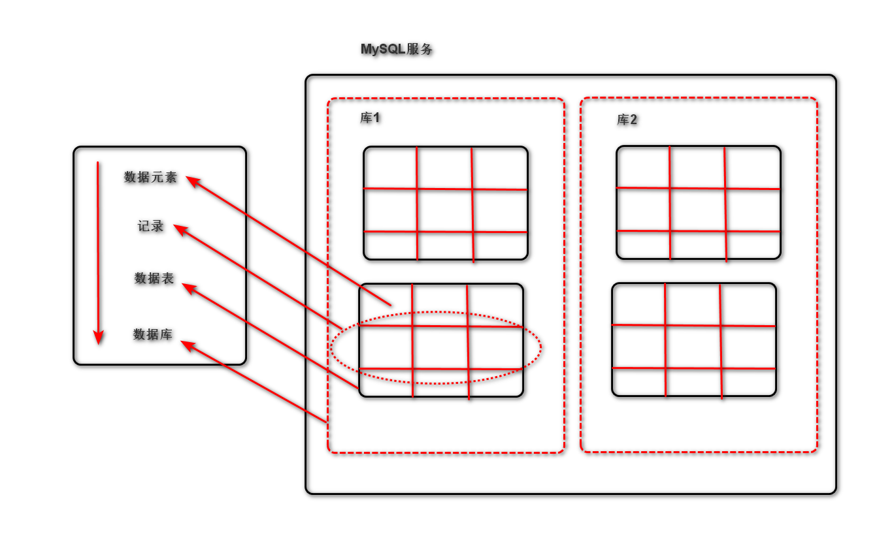
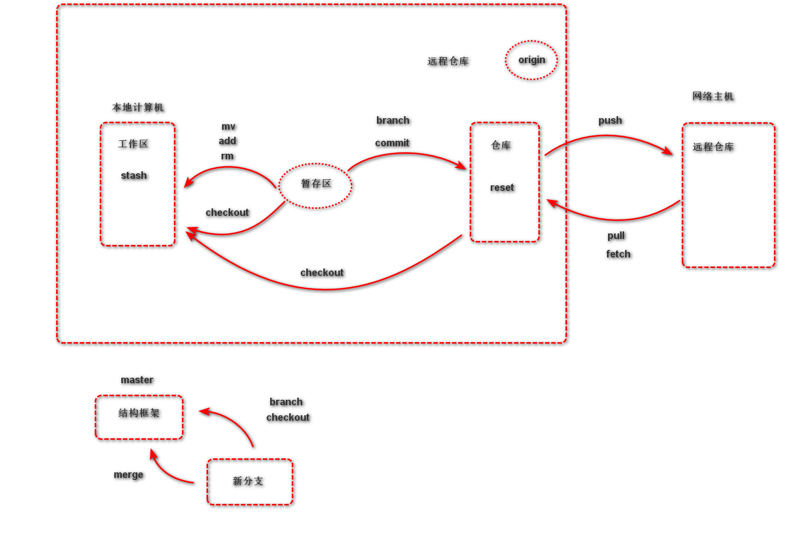

由于文本处理极其常用，且对文本内容的搜索、定位、提取是逻辑比较复杂的，故正则表达式的出现很好的解决了该问题
即文本的高级匹配模式，提供搜索、替换等功能。其本质是由一系列字符和特殊符号形成的字符串，此字符串即正则表达式
通过普通字符和具有特定含义的字符来组成字符串，用以描述一定的字符串规则（比如：重复，位置等），来表达某类特定的字符串，进而进行匹配
普通字符匹配其对应的字符
re.findall('ab', 'abcdefabcd')得到的结果为['ab', 'ab']
注：python中的正则表达式也可以匹配中文
|
匹配在|两侧的任意正则表达式
re.findall('com|cn', 'https://www.baidu.com.cn')得到的结果为['com', 'cn']
.
匹配除换行符的任意一个字符
re.findall('张.丰', '张三丰,张四丰')得到的结果为['张三丰', '张四丰']
注：多个.可以匹配多个字符，但不用，由于有表示重复的元字符
[字符集]
匹配字符集中的任意一个字符
[abc#!好]：表示匹配其中任意一个字符[0-9]/[a-z]/[A-Z]：表示匹配区间中的任意一个字符[#?0-9a-z]：混合书写，一般区间表达写在后面re.findall('[aeiou], 'How are you!'')得到的结果为['o', 'e', 'i', 'o', 'u']
[^]
匹配除了字符集以外的任意一个字符
re.findall('[^0-9]', 'use 007 port')得到的结果为['u', 's', 'e', ' ', ' ', 'p', 'o', 'r', 't']
^
匹配目标字符串的开始位置
re.findall('^Jame', 'Jame,hello')得到的结果为['Jame']
re.findall('^Jame', 'Hi,Jame')得到的结果为[]
$
匹配目标字符串的结尾位置
re.findall('Jame$', 'Jame,hello')得到的结果为[]
re.findall('Jame$', 'Hi,Jame')得到的结果为['Jame']
注：如果^与$同时出现，则可以实现完全匹配的效果
*
匹配前面的字符出现0次或多次
re.findall('wo*', 'wooooo~~w!')得到的结果为['wooooo', 'w']
+
匹配前面的字符出现1次或多次
re.findall('wo+', 'wooooo~~w!')得到的结果为['wooooo']
?
匹配前面的字符出现0次或1次
re.findall('-?[0-9]+', 'Jame,age:18,-26')得到的结果为['18', '-26']
{n}
匹配前面的字符出现n次
re.findall('1[0-9]{10}', 'Jame:13886495728')得到的结果为['13886495728']
{m,n}
匹配前面的字符出现m~n次
re.findall('[1-9][0-9]{5,10}', 'Baron:1259296994')得到的结果为['1259296994']
\d与\D
\d匹配任意数字字符，\D匹配任意非数字字符
re.findall('\d{1,5}', 'MySQL:3306,http:80')得到的结果是['3306', '80']
\d与\D
\w匹配任意普通字符，\W匹配任意非普通字符
re.findall('\w+', 'server-port='8888'')得到的结果是['server-port', '8888']
注：普通字符指的是数字，字母，下划线，汉字等
\A与\Z
\A匹配开头位置，\Z匹配结尾位置
\b与\B
\b匹配单词边界，\B匹配非单词边界
re.findall('\b\w+', ' Hello 123.4')得到的结果是['Hello', '123']
注：单词边界指的是数字、字母（汉字）、下划线与其他字符的交界处
在匹配重复元字符后加?即可，如：*?或+?或{m,n}?
在正则表达式中，以()建立正则表达式的内部分组，子组是正则表达式的一部分，可以作为内部整体成为操作对象
可以作为整体操作，改变元字符的操作对象
如：re.search('(ab+), 'ababababab'.group())得到的结果是abababab
给正则表达式的子组起一个名字，表达子组的意义，这种有名字的子组即为捕获组
(?P<name>pattern)
re.search(r'(?P<pig>ab)+'.group('pig'))得到的结果为'ab'
re.findall(pattern, string, flags=0)
re.split(pattern, string, flags=0)
re.sub(pattern, replace, string, max, flags=0)
re.finditer(pattern, string, flags=0)
re.fullmatch(pattern, string, flags=0)
re.match(pattern, string, flags=0)
re.search(pattern, string, flags=0)
regex.flags
regex.pattern
regex.groupindex
regex.groups
regex = compile(pattern, flags=0)
regex.findall(string, pos, endpos)
注：由于compile对象拥有的实例方法与re中直接调用是一致的，区别在于函数多一些参数，故只以findall为例展示
obj.pos
obj.endpos
obj.re
obj.string
obj.lastgroup
obj.lastindex
obj.span()
obj.start()
obj.end()
obj.groupdict()
obj.groups()
obj.group(target)
扩展并丰富正则表达式的匹配功能
A/ASCII：只匹配ASCII码I/IGNORANCE：无视字母大小写S/DOTALL：使.可以匹配换行M/MULTILINE：使^和$可以匹配每一行的开头与结尾X/VERBOSE：为正则表达式添加注释
r'''a+ # 匹配多个a，至少一个
\w # 匹配一个字符'''
注：当使用多个flag时，用|隔开

结构化查询语言（Structured Query Language），一种特殊目的的编程语言，是一种数据库查询和程序设计语言，用于存取数据以及查询，更新和管理数据库系统
;结尾另：数字类型表
| 类型 | 占用大小（byte） | 有符号取值范围 | 无符号取值范围 |
|---|---|---|---|
| TINYINT | 1 | (-128, 127) | (0, 255) |
| SMALLINT | 2 | (-32768, 32767) | (0, 65535) |
| MEDIUMINT | 3 | (-8388608, 8388607) | (0, 1677215) |
| INT/INTEGER | 4 | (-2147483648, 214783647) | (0, 4294967295) |
| BIGINT | 8 | (-9223372036854775808, 922372036854775807) | (0, 1844674407370955165) |
| FLOAT | 4 | (-3.40282346E+38, -1.175494351E-38), 0, (1.175494351E-38, -3.40282346E+38) | 0, (1.175494351E-38, 3.40282346E+38) |
| DOUBLE | 8 | (-1.7976931348623157E+308, -2.2250736585072014E-308), 0, (2.2250736585072014E-308, 1.7976931348623157E+308) | 0, (2.2250736585072014E-308, 1.7976931348623157E+308) |
| DECIMAL(M, D) | 依赖于M，D的值 | 依赖于M，D的值 | 依赖于M，D的值 |
另：字符串类型表
| 类型 | 占用空间大小（byte） |
|---|---|
| CHAR | 0-255 |
| VARCHAR | 0-66535 |
| TINYBLOB | 0-255 |
| TINYTEXT | 0-255 |
| BLOB | 0-66535 |
| TEXT | 0-66535 |
| MEDIUMBLOB | 0-16777215 |
| MEDIUMTEXT | 0-16777215 |
| LONGBLOB | 0-4294967295 |
| LONGTEXT | 0-4294967295 |
另：时间类型表
| 时间类型 | 占用空间（byte） | 时间范围 | 时间格式 |
|---|---|---|---|
| DATE | 3 | 1000-01-01~9999-12-31 | YYYY-MM-DD |
| TIME | 3 | -838:59:59~838:59:59 | HH:MM:SS |
| YEAR | 1 | 1901~2155 | YYYY |
| DATETIME | 8 | 1000-01-01 00:00:00~9999-12-31 23:59:29 | YYYY-MM-DD HH:MM:SS |
| TIMESTAMP | 4 | 时间戳 | YYYY-MM-DD HH:MM:SS |
now()cardate()cartime()date(date)time(time)时间 + interval 时间间隔单位时间 - interval 时间间隔单位注：时间间隔单位为S/M/H/D/M/Y
=
：右移
show databases;create database 库名 [character set utf8];create database 库名 [charset = utf8];show create database 库名;use 库名select database();drop database 库名;create table 表名 (字段名 数据类型 附加内容, ...);
show tables;show create table 表名;desc 表名;drop table 表名;插入数据
insert into 表名 values (记录1), (记录2), ...;insert into 表名 (字段1, 字段2, ...) values (记录1), (记录2), ...;注：若没有特殊指明字段，记录要包含所有字段（包括有默认值，自增）；如果特殊指明字段，记录只需包含指明的字段即可
查找数据
select * from 表名 [where 条件;]select 字段1, 字段2, ... from 表名 [where 条件;]更新记录
update 表名 set 字段1 = 值1, 字段2 = 值2, ... where 条件;删除表记录
delete from 表名 where 条件;alter table 表名 add 字段名 数据类型;
alter table 表名 add 字段名 数据类型 first;alter table 表名 add 字段名 数据类型 after 字段名;alter table 表名 drop 字段名alter table 表名 modify 字段名 新数据类型;alter table 表名 change 旧字段名 新字段名 新数据类型;alter table 表名 rename 新表名where 字段名 like '模糊匹配格式'注：模糊匹配格式中使用%表示0个或多个字符，当%字符表示结尾有该字符，当字符%表示开头有该字符，当%字符%表示包含该字符即可；用_表示任意一个字符
select * from class_1 where hobby like '%下棋%'| id | name | hobby |
|---|---|---|
| 10 | 张三 | 睡觉，下棋，学习 |
注：括号仅表示这几个是不同字段，并不是真实表现形式
注：在MySQL中只支持部分元字符
select * from class_1 where hobby like '.+下棋.+'| id | name | hobby |
|---|---|---|
| 10 | 张三 | 睡觉，下棋，学习 |
where 字段名1 ORDER BY 字段名2
where 字段名1 ORDER BY 字段名2 DESCwhere 字段名1 ORDER BY 字段名2 ASCselect * from class_1 where sex = 'm' order by age;| id | sex | age |
|---|---|---|
| 1 | m | 25 |
| 7 | m | 18 |
| 15 | m | 15 |
限制select，update，delete语句的操作数量
select ... from ... where ... limit 数量delete from ... where ... limit 数量update ... set ... where ... limit 数量以union将多个select连接在一起，使得可以在多表多条件下筛选
select ... union select ... union ...
select ... union select ... union all ...select ... union select ... union distinct...查看Mysql数据库运行状态
客户端连接
mysql -h主机地址 -u用户名 -p密码注：本地连接可省略-h；主机地址包含IP与端口
启动连接
sudo /etc/init.d/mysql startsudo /etc/init.d/mysql restart关闭连接
sudo /etc/init.d/mysql stop退出Mysql命令台
exit备份命令
mysqldump -u用户名 -p 源库名 > 路径/文件名.sql
mysqldump -u用户名 -p --all-databases > 路径/文件名.sqlmysqldump -u用户名 -p -B 库1 库2 ... > 路径/文件名.sqlmysqldump -u用户名 -p 源库名 表1 表2 ...> 路径/文件名.sql恢复命令
mysql -u用户名 -p 目标库名 < 路径/文件名.sql
mysql -u用户名 -p --one-database 目标库名 < 路径/文件名.sql注：目标库要先创建
db = pymysql.connect(...)）c = db.cursor()）c.execute("sql语句")）db.commit()）c.close()）db.close()）db = pymysql.connect(host, port, user, password, charset, database)
db.commit()
db.rollback()
db.close()
cur = db.cursor()
cur.execute(query， args)
cur.fetchone()
cur.fetchmany(n)
cur.fetchall()
cur.close()
开源社区，有最多的开源项目
一个开源的分布式版本控制系统，用于高效的管理各种大小项目和文件
注：在本地仓库中，git希望工作区的内容与仓库保持一致，而且只有仓库中的内容才能和其他远程仓库交互
git config --system [选项]
git config --system user.name 用户名git config --global [选项]
git config --global use.email 邮箱git config [选项]
git config core.editor pycharmgit config --list初始化仓库
git init查看本地仓库状态
git status注：初始化仓库时默认工作在master（主）分支上，当工作区与仓库不一致时会有提示
将工作提交到暂存区
git add files ...git add *忽略提交内容
| 关键字 | 效果 |
|---|---|
| file | 忽略名字为file的文件 |
| *.a | 忽略.a结尾的文件 |
| *.a !lib.a | 忽略.a结尾的文件但是lib.a除外 |
| build/ | 忽略build/目录下的所有文件，过滤整个build文件 |
取消文件暂存记录
git rm --cached [file]将文件同步到本地仓库
git commit [file] -m "附加信息"注：-m表示提交附加信息（必须写），同时附加信息必须双引号；file不写则提交所有
查看commit记录
git loggit log --pretty=oneline比较工作区文件和仓库文件差异
git diff [file]将暂存区域或查某个commit点文件恢复到工作区
git checkout [commitid] -- [file]移动或删除文件
git mv [file] [path]git rm [file]注：执行完后会放入暂存区，需要commit提交
版本跳转
退到上一个commit节点的格式：git reset -- hard HEAD^
注：一个^就是退回一个版本，n个^就是退回n个版本；版本回退后，工作区会恢复到当前commit版本
退回到指定的commit节点的格式：git reset --hard [commitid]
注：commitid则为提交时的前七位编号
退回到指定的tag版本的格式：git reset --hard [tag]
查看所有操作记录
git relog注：最上面为最新操作，显示所有操作节点（commitid）
创建标签
git tag [tag_name] [commit_id] -m "message"注：commit_id可以不写，则默认最新的commit_id位置，message可以不写，但最好添加
保存工作区内容
git stash save "message"注：将工作区未提交的修改封存，让工作区回到修改前的状态
查看保存工作区列表
git stash list注：最新保存的在最上面
应用某个保存工作区
git stash apply [stash@{n}]删除保存工作区
git stash drop [stash@{n}]git stash clear查看分支情况
git branch [-a]注：前面带*的分支表示当前工作分支；加上-a，则显示所有分支
创建分支
git branch [branch_name]注：由于要基于原分支创建新分支，此时新分支会拥有原分支当前节点所有内容，故在创建时最好保证原分支处于干净的状态
切换分支
git chechout [branch_name]合并分支
git merge [branch_name]注：如果分支间提交发生冲突可能需要手动合并或再次commit确定
删除分支
git branch -d [删除分支]git branch -D [删除分支]下载远程仓库内容
git clone 远程仓库地址创建远程仓库
git remote add 远程仓库名 远程仓库地址git push -u 远程仓库名 上传分支名注：第一次上传分支要加-u来关联本地分支与远程仓库分支；远程仓库名是本地自己取的
删除远程主机
git remote rm [远程主机名]查看远程主机
git remote上传工作内容
git push [远程主机名]git push --force [远程主机名]git push [远程主机名] --tagsgit push [远程主机名] [tag]下载工作内容
git pull [远程主机名]git fetch [远程主机名] [远程分支名]:[本地新分支名]取消本地分支与远程仓库的关联
git push [远程主机名]:[branch]删除远程仓库标签
git push [远程主机名] --delete tag [tag_name]
re正则，MySQL数据库初步与git初步学习至此结束，下一部分为HTML与CSS